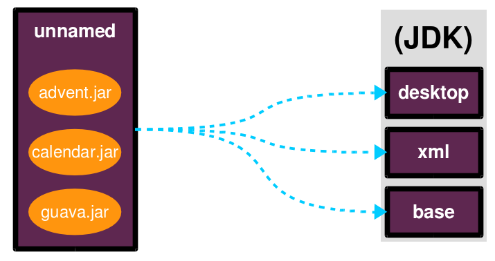
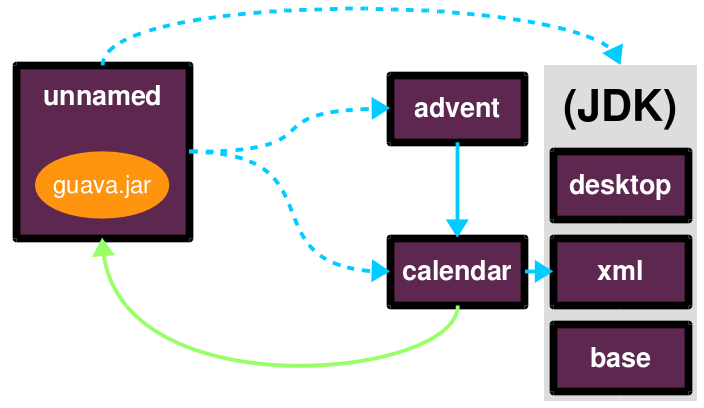
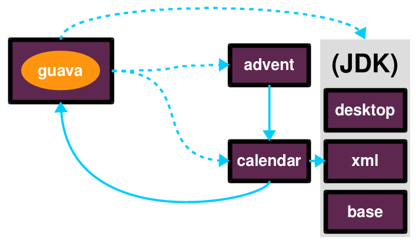

module $module_name {
requires $other_module;
exports $api_package;
}Jigsaw Walkthrough
Nicolai Parlog
Impedance Mismatch
Where the JVM disagrees with us
How do you think about Software?
What is it made of?
How I think about Software
interacting parts
parts have
names
dependencies
capabilities
creates a graph
How the JVM thinks about it
parts are packaged as JARs
to the JVM JARs
have no names
dependencies are unexpressed
have no coherent surface
JVM rolls them into one big ball of mud
Consequences
unexpressed, transitive dependencies
shadowing, version conflicts
complex class loading
slow
unsecure
maintenance nightmare
Project Jigsaw
Teaching the JVM about that graph
Quick History
- 2005
first discussions about modularity in JDK
- 2008
Project Jigsaw is created
- 2011-2014
exploratory phase; ends with JSR 376
- 2015
prototype is released
- 2017
Java 9 gets released with Jigsaw
Disclaimer / Call to arms
all is based on a prototype
everything can change
this is the time for community feedback
Goals
Reliable Configuration
Strong Encapsulation
Scalable Systems (esp. the JDK)
Security
Performance
Maintainability
Means
Introducing modules, which
have a name
express dependencies
encapsulate internals
Everything else follows from here!
Concepts & Features
Modules, Readability, Accessibility
Implied Readability, Qualified Exports
Modular JARs, Module Path, Module Graph
Services
Unnamed Modules, Automatic Modules
Reflection, Layers
Runtime Images
Java Module System Basics
Getting started...
Modules
Pieces of a puzzle
These are the nodes in our graph.
Definition
Modules
have a unique name
express their dependencies
export specific packages
(and hide the rest)
Implementation
Modules are JARs with a
module-info.class
(aka Modular JAR)gets generated from
module-info.java:this is called a Module Declaration or a
Module Descriptor
Readability
Putting the pieces together
Readability brings edges into our graph.
It is the basis for Reliable Configuration.
Definition
For two modules A and B with
module A {
requires B;
}we say
ArequiresBAdepends onBAreadsBBis readable byA
Reliable Configuration
Java will only compile/launch when
every dependency is fulfilled
there are no cycles
there is no ambiguity
Accessibility
Hiding internals
Accessibility governs which types a module can see.
It builds on top of Readability.
It is the basis for Strong Encapsulation.
Definition
A type in one module is only accessible
by code in another module if
the type is public
the package is exported
the second module reads the first
Strong Encapsulation
publicis no longer publiceven reflection doesn’t work
command line provides escape hatches
Consequences
great boost for maintainability
also the major reason for community unrest
critical APIs might survive until Java 10
(e.g.sun.misc.Unsafe— see JEP 260)
Jigsaw Advent Calendar
A running example
All examples are based on this toy project.
Find it on GitHub!
Structure

Code
public static void main(String[] args) {
List<SurpriseF_> fac = asList(
new ChocolateF_(), new QuoteF_());
Calendar cal = Calendar.create(fac);
println(cal.asText());
}No Module
modularization is not required
JARs continue to work as today!
(Unless you do forbidden things, more on that later.)
we can just put the application
on the class path as before
(Boring...)
A single module
Modularization
module advent {
// java.base is implicitly required
// requires no other modules
// exports no API
}(Still Boring...)
A single module
Readability & Accessibility

Multiple Modules

Multiple Modules
module surprise {
// requires no other modules
exports org.codefx.advent.surprise;
}module calendar {
requires surprise;
exports org.codefx.advent.calendar;
}module factories {
requires surprise;
exports org.codefx.advent.factories;
}module advent {
requires calendar;
requires factories;
requires surprise;
}Multiple Modules
Compilation, Packaging, Execution
# First compile/package the other modules
# ('surprises', 'calendar', 'factories')
# into folder 'mods'.
# Compile/package 'advent':
javac -mp mods -d classes/advent ${*.java}
jar -c --file=mods/advent.jar
--main-class=org.codefx.advent.Main
${*.class}
# Launch the application:
java -mp mods -m adventMigration
Moving Into Module Land
Why Is It Even An Option?
most module systems are "in or out",
but modularized JDK and legacy JARs
have to cooperate!so migration has to be possible
Enablers
Migration is enabled by two features:
Unnamed Module(s)
Automatic Modules
And the fact that module and class path coexist:
modular JARs can be put on either
"regular" JARs can be put on either
The Unnamed Module
Why The Class Path "Just Works"
Definition
The Unnamed Module
contains all JARs on the class path
(including modular JARs).
has no name (surprise!)
can read all modules
exports all packages
Example
Put all your JARs on the class path.

No Access
what if your code was modularized?
and your dependencies were not?proper modules can not depend on
"the chaos on the class path"this is not possible:
module advent {
requires unnamed;
}No Access

Automatic Modules
From Modules To The Class Path
Definition
An Automatic Module
is created for each "regular" JAR
on the module path.
gets a name based on the file name
can read all modules
(including the Unnamed Module)exports all packages
Example
put
guava-19.0.jaron the module paththen this works:
module advent {
requires guava;
}Example

What Goes Where?
| Class Path | Module Path | |
|---|---|---|
Regular JAR | Unnamed Module | Automatic Module |
Modular JAR | Unnamed Module | Named Module |
Migration Strategies
Two strategies emerge:
bottom-up migration
top-down migration
Bottom-Up Migration
Works best for Projects without
unmodularized dependencies
(libraries).
turn project JARs into modules
they still work on the class path
clients can move them to the module path
whenever they want
Top-Down Migration
Required for Projects with
unmodularized dependencies
(applications).
turn project JARs into modules
Top-Down Migration
modularized dependencies:
require direct ones
put all on the module path
unmodularized dependencies:
require direct ones with automatic name
put direct ones on the module path
put others on either path
Top-Down Migration
When dependencies get modularized:
hopefully the name didn’t change
if they are already on the module path,
nothing changesotherwise move them there
check their dependencies
Compatibility
What to look out for
when running on JDK 9
Break Stuff
Some internal changes can break existing code!
Just by running on JDK 9
(even without modularizing the application).
JEP 261 contains a list of risks.
Internal APIs
internal APIs disappear:
all in
sun.*most in
com.sun
(unless marked@jdk.Exported)
critical APIs might survive until Java 10
(e.g.sun.misc.Unsafe— see JEP 260)six methods adding/removing
PropertyChangeListenergot removed
What to look for?
What to do?
contact library developers
look for alternatives
(in the JDK or other libraries)consider command line flag
-XaddExportsturn to the Jigsaw mailing lists
Split Packages
packages should have a unique origin
no module must read the same package
from two modules
The current implementation is even stricter:
no two modules must contain
the same package (exported or not)
Examples
some libraries split
java.xml.*, e.g. xml-apissome JBoss modules split, e.g.,
java.transaction,java.xml.wsjsr305 splits
javax.annotation
What to look for?
search your code and dependencies
forjava(x)packages (jdepscan help)no tool support (yet?)
Note:
split packages on the class path will be inaccessible
What to do?
is the split on purpose / necessary?
find other ways to solve the problem
upgradeable modules to replace run-time modules
command line
-Xpatchto add individual classes
Run-Time Images
new JDK/JRE layout
internal JARs are gone (e.g.
rt.jar,tools.jar)JARs are now JMODs
application class loader is no
URLClassLoadernew URL schema for runtime image content
What to look for?
does the code rummage around
in the JDK / JRE folder?search for casts to
URLClassLoaderare URLs to JDK classes / resources handcrafted?
Obsolete
Endorsed Standards Override Mechanism
Extension Mechanism
Boot Class Path Override
But wait, there’s more!
General Advice I
The most relevant for most applications:
internal APIs
split packages
General Advice II
get your code in shape
(and prevent relapses)check your dependencies and tools
if any are suspicious
(automatically true for IDEs, build tools):make sure they’re alive
get them up to date!
or look for alternatives
get an EA-build and try it!
Questions?
Find Me
Hire Me
Java 9 Migration & Training
Jigsaw vs. OSGi
OSGi Bundles:
are JARs with a descriptor (
MANIFEST.MF)have a name
import package or bundle
define public API by exporting packages
Jigsaw vs. OSGi
| Jigsaw | OSGi | |
|---|---|---|
Versioning | not at all | packages and modules |
Runtime Behavior | mostly static | dynamic |
Services | declarative via | declarative or programmatically; |
Class Loaders | operates below | one per bundle |
Image Credits
Introduction
puzzle-people: Kevin Dooley (CC-BY 2.0)
binary-code: Christiaan Colen (CC-BY-SA 2.0)
ball-of-mud-2: Andi Gentsch (CC-BY-SA 2.0)
jar-hell: Wellcome Library, London (CC-BY 4.0)
Project Jigsaw
flag-amsterdam: George Rex (CC-BY-SA 2.0)
puzzle-cubed: David Singleton (CC-BY 2.0)
Java Module System
puzzle-piece-green: StockMonkeys.com (CC-BY 2.0)
puzzle-pieces-put-together:
Ken Teegardin (CC-BY-SA 2.0)iceberg: NOAA’s National Ocean Service (CC-BY 2.0)
class and module diagrams:
Nicolai Parlog (CC-BY-NC 4.0)
Migration
keep-out: Brian Smithson (CC-BY 2.0)
garbage-only: Peter Kaminski (CC-BY 2.0)
golden-gate: Nicolas Raymond (CC-BY 2.0)
confusion: Procsilas Moscas (CC-BY 2.0)
module diagrams:
Nicolai Parlog (CC-BY-NC 4.0)
Compatibility
broken-glass: Eric Schmuttenmaer (CC-BY-SA 2.0)
internals: David French (CC-BY 2.0)
cut: Jinx! (CC-BY-SA 2.0)
cells: Jonathan Lin (CC-BY-SA 2.0)
obsolete: Trevor King (CC-BY 2.0)
sign: Duncan Harris (CC-BY-SA 2.0)
Rest
question-mark: Milos Milosevic (CC-BY 2.0)
bundles: Danumurthi Mahendra (CC-BY 2.0)